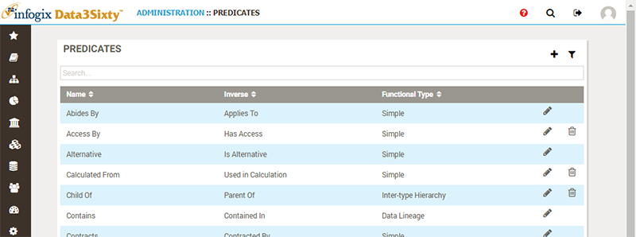
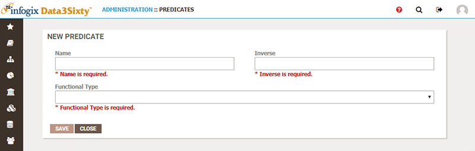
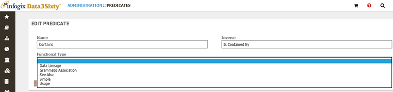

|
|
Establishing predicates
Note: If you are not already familiar with asset relationships you should first check out the User Guide topic Defining relationships between assets.
It is the responsibility of the system administrator to define and maintain a set of relationships which can be used to link various assets in the system. For more information on establishing the relationships available to users, please see the topic Establishing relationships.
In order to establish sets of relationships you must first define the predicates to use.
A predicate is the term that links the two sides of a relationship. For example, take the two artifact types "Report" and "Business Term". Say you have a Report which contains a particular Business Term, then "Report contains Business Term" is an example of a relationship. The term that links the two artifacts, the predicate, in this case is "contains":
| Subject | Predicate | Object |
|---|---|---|
| Report | contains | Business Term |
| Application | stores | Business Term |
| Business Term | synonym of | Business Term |
| Policy | governs | Business Term |
| Report | similar | Report |
For every relationship, the inverse of the predicate must also be defined. In the case of our example, "Report contains Business Term", this could also be written as "Business Term is contained in Report":
| Subject | Predicate | Object |
|---|---|---|
| Business Term | is contained in | Report |
| Business Term | is stored by | Application |
| Business Term | synonym of | Business Term |
| Business Term | is governed by | Policy |
| Report | similar | Report |
Each predicate is assigned a Functional Type which controls its behavior:
| Functional Types | Description |
|---|---|
| Data Lineage |
Used to define source paths between objects. This predicate type must be used for lineage. Note: The relationship type for Data Lineage does not apply to legacy lineage. |
| Grammatic Association | Used for synonyms, antonyms, abbreviations or grammatically similar terms. |
| See Also | Used for relationships between similar artifacts. |
| Simple | Used to define a simple relationship between two assets. |
| Usage | Used to define a relationship where one asset is used in another asset. |
Browsing predicates
Choose Administration > MetaModel > Predicates to view a list of existing predicates:

Creating predicates
You can click the Add button to create a new predicate. The New Predicate panel appears:

- Provide a Name for your predicate, for example Contains. Then, provide the name of the Inverse of the predicate, for example Contained In.
- Choose a Functional Type, for example Data Lineage.
- Click Save to create the new predicate and return to the list of predicates.
Editing predicates
You can click the Edit button next to a predicate to modify it, using the Edit Predicate panel:

Having created your predicates, you can then establish relationships between artifacts, using predicates that you have created to frame the link between the two objects.
See Establishing relationships for more details.